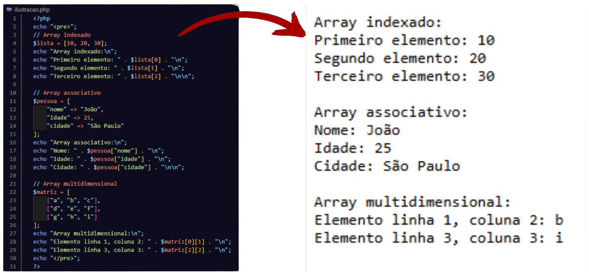

História e Evolução do PHP
PHP foi criado em 1994 por Rasmus Lerdorf para monitorar acessos ao seu currículo online, inicialmente chamado de "Personal Home Page Tools" (PHP Tools). Seu propósito era simplificar tarefas web, como processar formulários e interagir com bancos de dados. Em 1997, a versão PHP 3 (reescrita por Zeev Suraski e Andi Gutmans) transformou-o em uma linguagem de script mais poderosa, adotando o nome "PHP: Hypertext Preprocessor".
Seu propósito principal no desenvolvimento web é gerar conteúdo dinâmico, permitindo a criação de sites interativos, sistemas de gerenciamento (como WordPress) e aplicações complexas. A evolução do PHP inclui melhorias de performance (PHP 7 com o motor Zend Engine 3) e recursos modernos (tipagem mais forte, JIT compilation no PHP 8). Hoje, o PHP é uma das linguagens mais usadas na web, destacando-se por sua facilidade, integração com HTML e vasta comunidade.
Introdução aos Arrays em PHP
Em PHP, arrays são estruturas versáteis que armazenam múltiplos valores em uma única variável, facilitando o gerenciamento de dados. Eles podem ser indexados (com chaves numéricas) ou associativos (com chaves personalizadas, como strings). Além disso, suportam arrays multidimensionais, permitindo armazenar outros arrays dentro deles. São amplamente usados para manipular listas, resultados de bancos de dados e configurações. Funções nativas como array_map(), array_filter() e foreach() simplificam sua manipulação. Com sintaxe simples e flexibilidade, os arrays são fundamentais no desenvolvimento PHP.
Tipos de Arrays
- Array Indexado
- Array Associativo
- Array Multidimensional
I. Indexado:
O array indexado em PHP é a forma mais básica de armazenar uma coleção de valores, utilizando índices numéricos sequenciais que começam em zero. Esse tipo de array é ideal para situações em que a ordem dos elementos é importante, como listas de itens ou conjuntos de dados que precisam ser acessados por posição. Sua estrutura simples e direta facilita a iteração com loops, como for ou foreach, sendo amplamente utilizado em operações que envolvem sequências ordenadas.
II. Associativo:
Diferente do array indexado, o array associativo usa chaves personalizadas, geralmente strings, para identificar seus valores. Essa abordagem permite uma associação mais intuitiva entre chaves e valores, tornando-o perfeito para representar dados com identificadores únicos, como configurações, atributos de objetos ou registros de bancos de dados. A principal vantagem é a facilidade de acesso aos valores por meio de nomes significativos, melhorando a legibilidade e organização do código.
III. Multidimensional:
Um array multidimensional é uma estrutura que contém outros arrays em seus elementos, permitindo a criação de matrizes ou estruturas de dados mais complexas, como tabelas ou conjuntos aninhados. Esse tipo de array é útil para representar informações hierárquicas, como dados de formulários com múltiplas seções, resultados de consultas SQL com relacionamentos ou até mesmo estruturas como grades e planilhas. Sua flexibilidade o torna essencial para aplicações que exigem armazenamento e manipulação de dados em várias dimensões.
Declaração e Acesso
Para declarar um array indexado, usa-se [] ou array(), como $lista = [1, 2, 3], e seus valores são acessados via índice numérico ($lista[0]). Já um array associativo define chaves personalizadas, como $pessoa = ["nome" => "João"], sendo acessado por essas chaves ($pessoa["nome"]). Já o array multidimensional combina arrays dentro de arrays, como $matriz = [["a", "b"], ["c", "d"]], onde o acesso é feito com múltiplos índices ($matriz[0][1]). A sintaxe é flexível, permitindo estruturas complexas com facilidade.
Ilustração dos Arrays
Importância no Desenvolvimento Web
A capacidade de trabalhar com arrays indexados, associativos e multidimensionais é fundamental no desenvolvimento web com PHP, pois permite organizar e manipular dados de forma eficiente. Arrays indexados são essenciais para lidar com listas ordenadas, como resultados de bancos de dados ou parâmetros de URLs. Arrays associativos simplificam o gerenciamento de dados estruturados, como configurações, formulários e JSON, usando chaves descritivas para melhor legibilidade. Já arrays multidimensionais possibilitam representar estruturas complexas, como tabelas de banco de dados, carrinhos de compras e menus hierárquicos. Além disso, a integração de arrays com funções nativas do PHP (como array_filter, array_map e loops) agiliza o processamento de informações, reduzindo a quantidade de código necessário. Sua flexibilidade também facilita a comunicação com APIs, bancos de dados e templates, tornando-os indispensáveis para criar aplicações dinâmicas, escaláveis e de fácil manutenção. Em frameworks modernos (como Laravel e Symfony), os arrays são a base para coleções e manipulação de dados, reforçando sua importância no ecossistema PHP.
Referências
PHP.NET. Arrays. Disponível em: https://www.php.net/manual/pt_BR/language.types.array.php. Acesso em: 05 jul. 2025.
W3SCHOOLS. PHP Arrays. Disponível em: https://www.w3schools.com/php/php_arrays.asp. Acesso em: 05 jul. 2025.
GEEKSFORGEEKS. PHP Arrays: Indexed, Associative, Multidimensional. Disponível em: https://www.geeksforgeeks.org/php-arrays/. Acesso em: 05 jul. 2025.
LERDORF, Rasmus et al. PHP: A História por Trás da Linguagem. Disponível em: https://www.php.net/history. Acesso em: 05 jul. 2025.
DEVMEDIA. Trabalhando com Arrays em PHP. Disponível em: https://www.devmedia.com.br/php-arrays/40678. Acesso em: 05 jul. 2025.